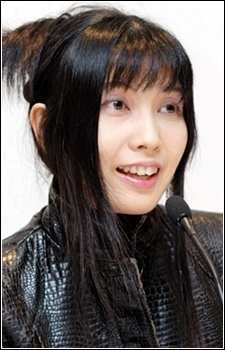
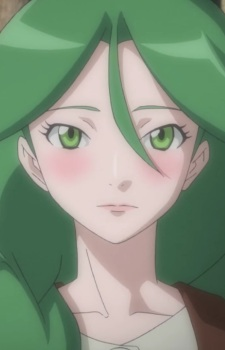

|  |
|---|
|  | Cheryl | Pokemon Diamond and Pearl | Cheryl is a descendant of a family of treasure hunters. She thinks highly of her grandfather advice. |
| Fennel | Pokemon Black and White | ||
| Lorelei | Pokemon | Lorelei is a member of the Kanto Elite Four. She specializes in ice types Pokemon. She known for her logical, calculated, and cool style of battling. |